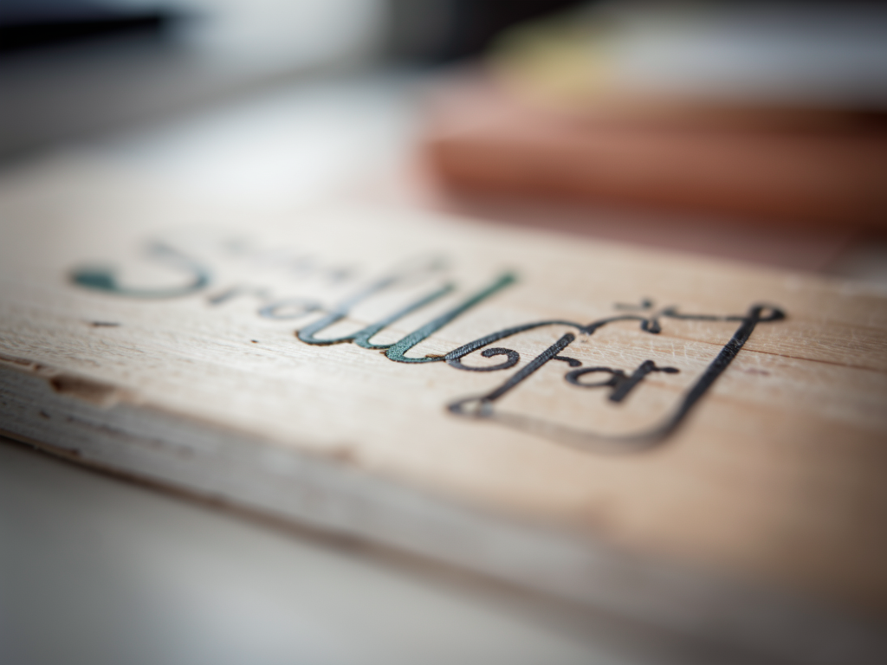
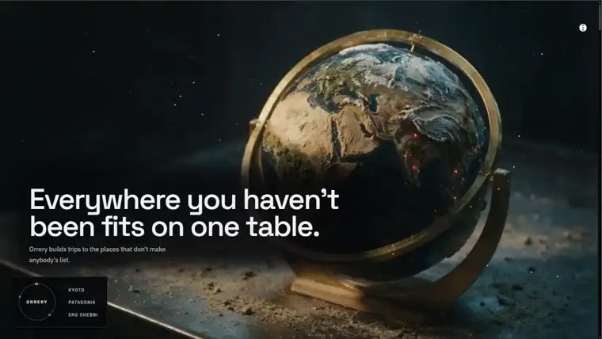
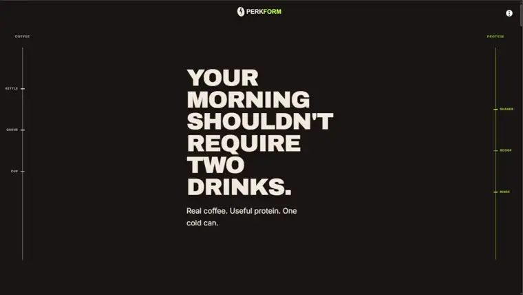
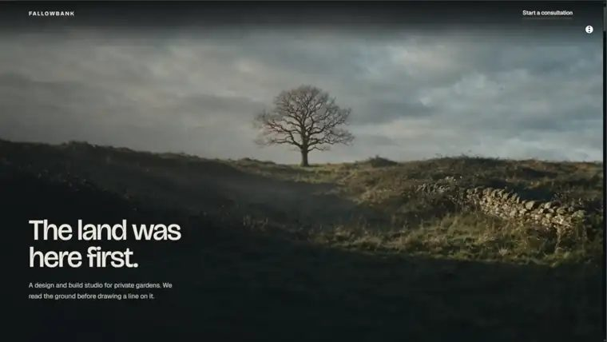

Skill that builds premium scroll-driven pages and rejects the generic AI pattern: the same six grids, the same counters 01/06, the same purple gradient. It checks its own work before handing it to you.

main-design) for Claude CodeInstall it as a skill and generate scroll-driven HTML/CSS/JS pages from an interview with you, following a fixed craft standard — not a template that only changes color.
Video scrubs frame by frame under the mouse wheel, sections pin while the argument advances, rails slide sideways, headlines assemble line by line.
Filmic one-shot, chapter-based editorial, living surface, continuous world, typographic poster, gallery, split stage, rhythmic cutlist — each forbids what the others require.
A headless browser scrolls through the page at every position and reports dead scroll, actual contrast, cues that never open, and clips stuck on a frozen “poster.”
Every build follows the same procedure before becoming a final page.
A new build must differ from every previous build in at least 4 of 6 dimensions: grammar, nav, hero, act structure, ending, signature move. Failed the gate? Change the plan, not the record.
One line per act — the emotion and what on screen causes it. Two adjacent acts with the same emotion means one is filler. One peak only, with the asset budget and the silence before it.
Run doctor before anything else — it finds the three setup problems that would otherwise show up later as misleading errors.
Required for every plugin script.
Requires a full build (with scale), not a stripped-down set of ~50 filters. SCROLLCRAFT_FFMPEG overrides the search.
# automatic check node scripts/doctor.mjs
Used in the verification pass. Install it in the build folder.
# in the build folder npm i playwright-core
Real commands, in the order you actually run them.
Inside Claude Code.
/plugin marketplace add inematds/scroll-craft
The plugin identifier is main-design.
/plugin install main-design # if prompted, run /reload-plugins
Before any build, confirm that ffmpeg, the WebP muxer, and playwright-core are set up correctly.
node scripts/doctor.mjs # say exactly what's missing node scripts/workspace.mjs --ensure # create the workspace and empty record
Describe what you want, or call it directly.
/main-design:scrollcraft
To edit the skill locally without going through the marketplace.
claude --plugin-dir ./plugins/main-design
Same skill, same engine, no shared skeleton — grammar, navigation, and ending change in each one.



Straight from the README — nothing hidden.
SCROLLCRAFT_FFMPEG e SCROLLCRAFT_CHROME override the search.